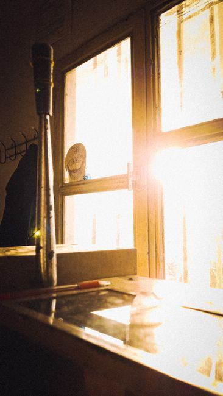

Six o'clock. Not six fifteen. Not close enough. A bell rang in the hallway outside my room every morning for years, and getting up before that bell finished ringing was the one rule nobody ever had to remind me of twice.
Group meditation came next. Then a silent breakfast, then hours of assigned work, then another silent meal, then more meditation, then lights out by ten. The schedule ran without me having to think about it. I never once decided what to do at any point in the day. The day had already decided for me.
Then I left. And the first week back in an apartment with a phone that buzzed and a fridge I could open at any hour and nobody ringing anything for me broke something I didn't know I'd built. I had spent years training myself to hand my schedule over to a structure bigger than my own willpower, and then that structure was just gone.
I want to say one thing clearly before I get into what I actually did about it. I am not suggesting you build a monastery in your living room. Wake up at four thirty, eat nothing but rice and vegetables, and take a vow of silence, and you will not have a better life. You'll have a life that lasted about four days before you quietly gave the whole thing up.
What I did instead was pull apart what actually made the monastic schedule work from what was just the particular shape it happened to take inside a particular building. Some of it mattered a great deal. Some of it, I'm fairly sure, could be dropped without losing anything at all. I tested pieces of this for ninety days before I trusted any of it enough to write down here, and a few things I expected to keep ended up getting cut.
Here is what a monastic day is actually built from, what I kept out of it, and what I learned from the parts that didn't survive contact with a normal life.
What a Real Monastic Day Actually Looks Like
People tend to picture monastery life as one long peaceful sit, praying and meditating from dawn until dark. One monk who lived that life for fourteen years put it more plainly. A monastic routine teaches discipline, contemplation, and obedience. It also, he found out over time, teaches you exactly how much strain a person can absorb before something in them gives.
Two very different traditions, when you actually lay their schedules side by side, come out looking almost identical in shape.
The ashram version
A monk who spent time inside a Self Realization Fellowship ashram described his weekday like this:
- 6:00 wake for private meditation
- 7:00 group meditation
- 8:00 breakfast, eaten in silence
- 8:30 to 12:00 work
- 12:00 meditation, then lunch, eaten in silence
- 1:00 to 4:30 more work
- 4:30 to 5:30 recreation
- 6:00 to 7:00 group meditation
- 7:00 dinner, eaten in silence
- 9:00 private meditation
- 10:00 lights out
Silence held from ten at night until eight the next morning, and through every meal and every meditation, and all day on Sundays.
The Orthodox version
A priest describing an Orthodox monastery's daily rhythm laid out something with the same bones, just different names attached:
- 4:30 wake
- 5:00 morning church services
- 7:30 coffee and morning prayers in your cell, silence until 9:00
- 9:00 work period begins
- 12:00 midday prayers, then lunch
- 1:30 work resumes
- 5:00 evening prayers, then dinner
- 6:30 evening services, sometimes running one to three hours
- 8:00 to 9:00 retire to your cell, read, pray, sleep
What both versions have in common
Strip away the theology and the two schedules are the same idea wearing different clothes. Monks pray or meditate several separate times across the day rather than sitting once for a long stretch. Every meal happens inside a fixed block, in silence, rather than whenever someone gets hungry. Work has an actual stopping point. And the day ends early enough that the next one can start on time without a fight.
There's a name for the underlying idea: a rhythm of presence, built from praying at set points throughout the day rather than once, so the day itself gets sanctified in pieces instead of all at once at the end when you're too tired to mean it.
The Four Points I Actually Rebuilt
I couldn't run my day in nine separate silent blocks and still hold down a normal job. So instead of eight or nine fixed points, I picked four, borrowed from the same instinct that produces a schedule like the ones above: mark a handful of fixed spots across the day and let something short and deliberate happen at each one.
1. Before the phone gets a vote
For five to ten minutes after I wake up, before I look at a screen, I sit. Not a full sitting practice. Just enough to set an intention for the day before the day gets to set one for me instead. One person who tried a stripped down version of monk life for a week put it well: no phone meant no scrolling, and no scrolling meant she actually noticed things she'd overlooked for years, like birdsong, or the texture of her own bedsheet.

2. A pause in the middle of the day
Three to five minutes. Breath, and a reminder of what the point of the day actually was before it got swallowed by the day itself. Small enough that it fits inside a lunch break without anyone noticing you've stepped out.
3. Something to close out work
Ten to fifteen minutes at the end of the workday, reflecting on what actually happened and letting go of what didn't. This is the one I resisted longest, because it felt like wasted time I could have spent starting dinner. It turned out to be the one that mattered most for actually feeling done with work instead of just stopping.
4. A short close before sleep
Five to ten minutes, usually journaling, before bed. The same person who tried monk life for a week set her bedtime at nine sharp and called it one of the hardest rules to keep and, later, one of the only ones she kept going after the week ended. I don't hold nine o'clock. I hold roughly the same hour every night, which turned out to matter more than the exact number on the clock.
What I Learned From the Parts That Didn't Work
I tried keeping meals in total silence at home. Nobody else in the house had agreed to this. It lasted three dinners.
I tried holding the four points at the exact same minute every single day, no flexibility at all, the way a monastery schedule allows because nobody inside it has a client calling at nine fifteen. Real life doesn't hold to a fixed clock the way a monastery does. What held instead was treating the four points as an identity rather than a rule. Someone who built a career around exactly this kind of structure put it better than I could: willpower isn't about discipline, it's about identity. Decide who you are, and the actions tend to follow on their own. The more of the rule I followed on purpose, the freer I actually felt doing it, which is a strange thing to discover about rules.
The part that surprised me most didn't come from a monk who loved the life. It came from one who'd lived it for fourteen years and watched it up close. Psychologists eventually got brought in to work with the monks and nuns at his community, and they told the group that a monastic lifestyle was one of the most stressful ways of living they'd studied, on par with the pressure carried by air traffic controllers and firefighters. Not because prayer and meditation are stressful. Because handing every single hour of your life over to someone else's version of what your structure should look like will eventually cost you something, no matter how peaceful it looks from outside the walls.
That isn't an argument against structure. It's the whole reason I only kept four points instead of nine, and why I built them around my own life instead of importing someone else's wholesale. Do less, not more. A monk doesn't lead a lazy life, but he doesn't run an endless task list either. There are certain things happening today, and no more, which is exactly what leaves room to do those few things slowly and completely instead of rushing through a dozen.
Questions I Get Asked About This
Do I need to be religious for this to work?
No. These are practices, not beliefs. Whatever schedule you land on works for presence and steadiness whether or not you hold the theology underneath the version it originally came from.
What if I don't have time?
Start with five minutes. Nobody who built a schedule like the ones above did it in a single day. Begin small and let it grow once it's actually holding.
What if I live with other people, or have kids?
Adapt it. Don't abandon it. Wake up earlier than everyone else if that's the only quiet you can find. Use a commute. Practice while the house is still asleep. Let the people you live with in on the simple parts instead of trying to protect the whole thing behind a closed door.
The work itself doesn't change once you've got a schedule figured out. You're still carrying the same water you were carrying before any of this. You just stop resenting the bucket.